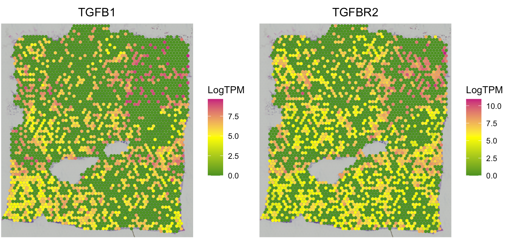

Spatially variable genes and co-expressed ligand–receptor interactions
Source:vignettes/SpatialCorrelation.Rmd
SpatialCorrelation.RmdIn this vignette, we demonstrate the use of SpaCET to
identify (1) spatially variable genes, (2) spatially co-expressed
ligand–receptor interactions, and (3) pairwise co-expressed gene pairs,
all of which are primarily based on Moran’s I measures.
Create SpaCET object
To read your ST data into R, user can create an SpaCET object by
using create.SpaCET.object or
create.SpaCET.object.10X. Specifically, if users are
analyzing an ST dataset from 10x Visium, they only need to input
“visiumPath” by using create.SpaCET.object.10X. Please make
sure that “visiumPath” points to the standard output folders of 10x
Space Ranger, which has both “filtered_feature_bc_matrix” and “spatial”
folders.
library(SpaCET)
# set the path to the in-house breast cancer ST data.
# user can set the paths to their own data.
visiumPath <- file.path(system.file(package = "SpaCET"), "extdata/Visium_BC")
# load ST data to create an SpaCET object.
SpaCET_obj <- create.SpaCET.object.10X(visiumPath = visiumPath)
# calculate the QC metrics
SpaCET_obj <- SpaCET.quality.control(SpaCET_obj)Compute weight matrix
The spatial weight matrix W is calculated based on the Radial Basis Function (RBF) kernel as follows. dij denotes the Euclidean distance between spot i and j on spatial coordinates in the m space. We assigned the free parameter = 100 because the distance between a spot and its 1st layer of neighbor spots is 100 um. We set Wii = 0 to mask coexpression effects in the same spot. We also set Wij = 0 when the distance between spots i and j is over 200 um, i.e., beyond two layers of neighbor spots in Visium data.
W <- calWeights(SpaCET_obj, radius=200, sigma=100, diagAsZero=TRUE)Spatially variable genes
Users can define a vector of genes and test whether they are
spatially variable using mode="univariate". Statistical
significance is assessed by permuting spot positions. To perform a
genome-wide analysis, set item = NULL.
# define a gene vector
genes <- c("TGFB1","TGFB2","TGFB3","TGFBR1","TGFBR2","TGFBR3")
# run spatial autocorrelation
SpaCET_obj <- SpaCET.SpatialCorrelation(
SpaCET_obj,
mode="univariate",
item=genes,
W=W,
nPermutation=1000
)
# show results
SpaCET_obj@results$SpatialCorrelation$univariateSpatially co-expression ligand-receptor interaction
Users can define a two-column matrix of gene pairs and test whether
they are spatially co-expressed using mode="bivariate".
Statistical significance is assessed by permuting spot positions. To
perform the analysis using the in-house ligand–receptor database, set
item = NULL.
# define a two-column matrix of gene pairs
genePairs <- data.frame(c("TGFB1","TGFB1"), c("TGFBR1","TGFBR2"))
# run spatial autocorrelation
SpaCET_obj <- SpaCET.SpatialCorrelation(
SpaCET_obj,
mode="bivariate",
item=genePairs,
W=W,
nPermutation=1000
)
# show results
SpaCET_obj@results$SpatialCorrelation$bivariateUsers can use the following code to visualize the gene expression levels of spatially co-expressed gene pairs.
SpaCET.visualize.spatialFeature(
SpaCET_obj,
spatialType = "GeneExpression",
spatialFeatures = c("TGFB1","TGFBR2"),
nrow=1
)
Pairwise co-expression of genome-wide genes
To perform genome-wide pairwise co-expression analysis using
mode="pairwise", the output is a symmetric matrix of
Moran’s I values for each gene pair.
# run spatial autocorrelation
SpaCET_obj <- SpaCET.SpatialCorrelation(SpaCET_obj, mode="pairwise", W=W)
# show results
SpaCET_obj@results$SpatialCorrelation$pairwise[1:10,1:10]